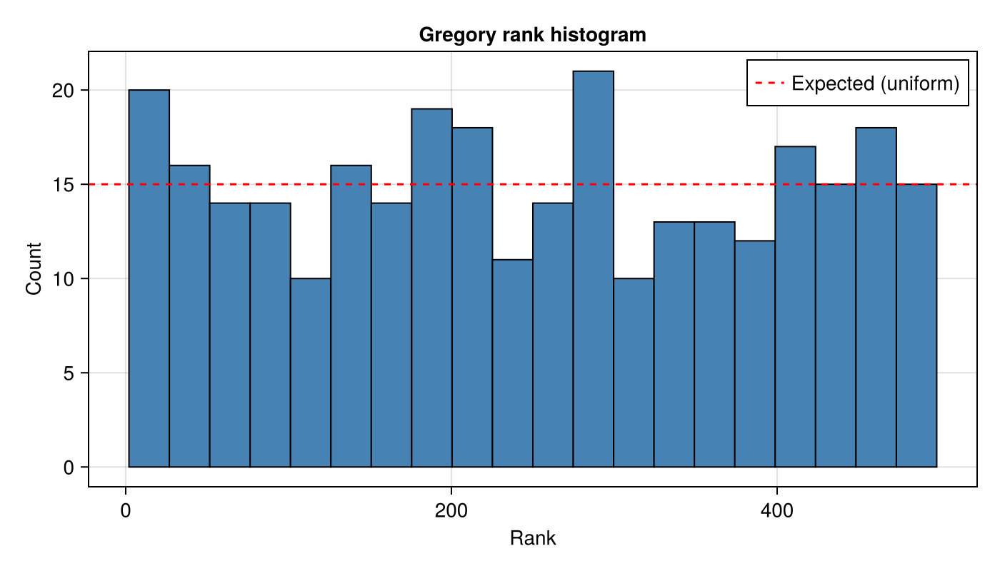
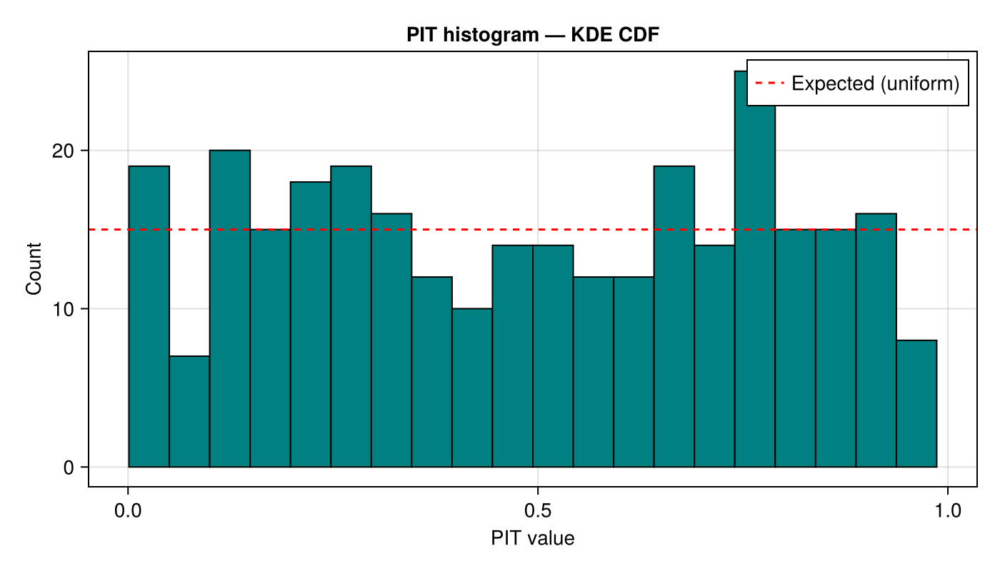
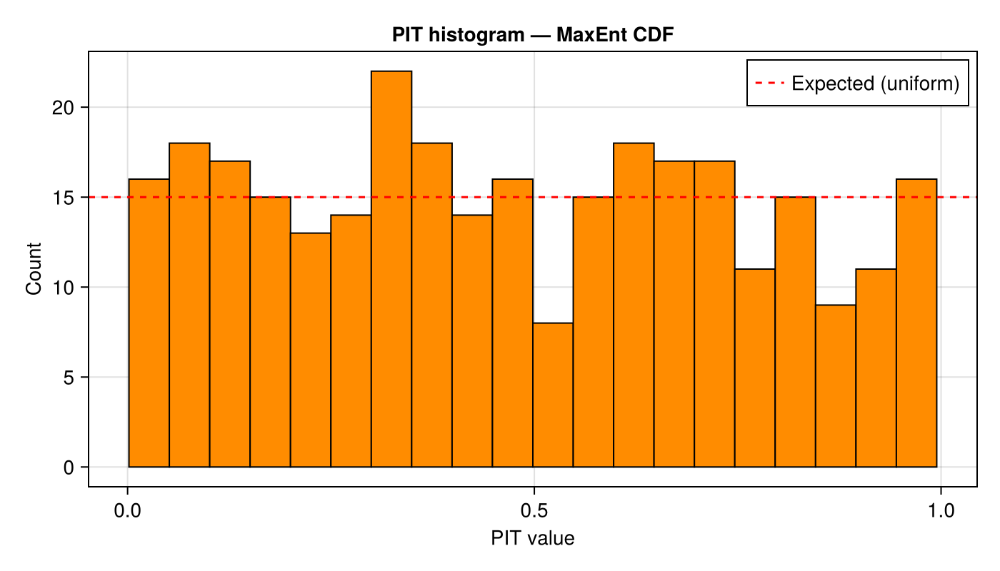
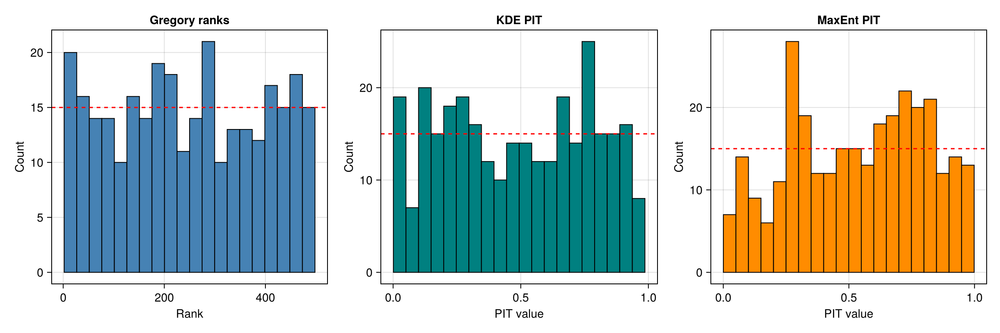
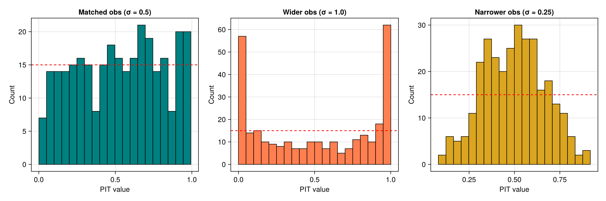
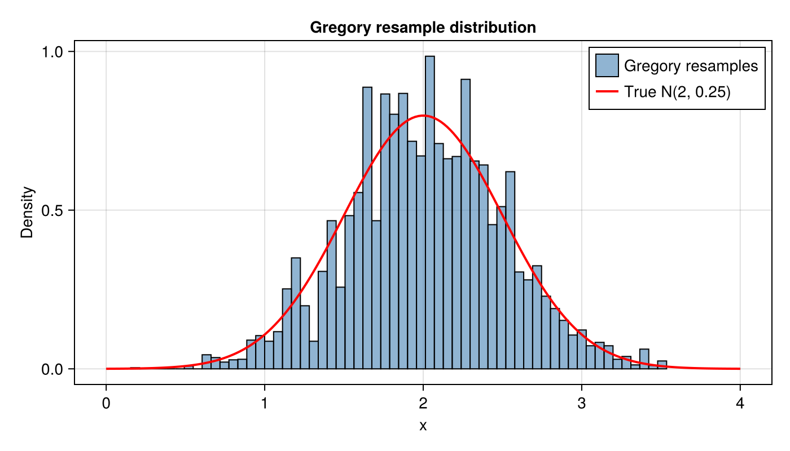

Rank Histograms
Rank histograms and probability-integral-transform (PIT) histograms are diagnostic tools for checking whether an ensemble correctly represents the true distribution. A well-calibrated ensemble produces a uniform histogram.
This example demonstrates three approaches:
- Gregory resampling — resample via the MLMC inverse-CDF, then compute ranks.
- KDE CDF — estimate the CDF with kernel density estimation, then evaluate at truth.
- MaxEnt CDF — estimate the CDF with maximum entropy, then evaluate at truth.
Model setup
We use a simple Gaussian model $X \sim \mathcal{N}(2,\, 0.5^2)$ with three levels that add decreasing amounts of noise.
using MultilevelMonteCarlo
using CairoMakie
using Statistics
using Random
Random.seed!(42)
μ_true = 2.0
σ_true = 0.5
levels = Function[
params -> params + 0.2 * randn(), # coarse — added noise σ = 0.2
params -> params + 0.02 * randn(), # medium — added noise σ = 0.02
params -> Float64(params), # fine — exact
]
draw_parameters() = μ_true + σ_true * randn()
qoi_function = identity
samples_per_level = [2000, 1000, 200]Gregory rank histogram
We run rank_histogram_gregory to collect ranks. Each iteration draws a truth sample from the finest level, builds a fresh MLMC ensemble, Gregory-resamples, and records where the truth falls in the sorted ensemble.
n_rank = 300
n_resamples = 500
ranks = rank_histogram_gregory(levels, qoi_function, draw_parameters,
n_rank, samples_per_level;
number_of_resamples = n_resamples)A flat histogram indicates correct calibration:
fig = Figure(size = (700, 400))
ax = Axis(fig[1, 1];
title = "Gregory rank histogram",
xlabel = "Rank",
ylabel = "Count",
)
n_bins = 20
hist!(ax, Float64.(ranks); bins = n_bins, color = :steelblue, strokewidth = 1)
expected_per_bin = n_rank / n_bins
hlines!(ax, [expected_per_bin]; color = :red, linestyle = :dash,
label = "Expected (uniform)")
axislegend(ax; position = :rt)
KDE PIT histogram
rank_histogram_cdf with estimate_cdf_mlmc_kernel_density produces PIT values that should be $\mathrm{Uniform}(0,1)$ if the KDE CDF is well calibrated.
pit_kde = rank_histogram_cdf(levels, qoi_function, draw_parameters,
n_rank, samples_per_level,
estimate_cdf_mlmc_kernel_density)fig = Figure(size = (700, 400))
ax = Axis(fig[1, 1];
title = "PIT histogram — KDE CDF",
xlabel = "PIT value",
ylabel = "Count",
)
hist!(ax, pit_kde; bins = n_bins, color = :teal, strokewidth = 1)
expected_per_bin_cdf = n_rank / n_bins
hlines!(ax, [expected_per_bin_cdf]; color = :red, linestyle = :dash,
label = "Expected (uniform)")
axislegend(ax; position = :rt)
MaxEnt PIT histogram
Using estimate_cdf_maxent with $R = 6$ Legendre moments:
maxent_cdf(s, i) = first(estimate_cdf_maxent(s, i; R = 4))
pit_maxent = rank_histogram_cdf(levels, qoi_function, draw_parameters,
n_rank, samples_per_level,
maxent_cdf)fig = Figure(size = (700, 400))
ax = Axis(fig[1, 1];
title = "PIT histogram — MaxEnt CDF",
xlabel = "PIT value",
ylabel = "Count",
)
hist!(ax, pit_maxent; bins = n_bins, color = :darkorange, strokewidth = 1)
hlines!(ax, [expected_per_bin_cdf]; color = :red, linestyle = :dash,
label = "Expected (uniform)")
axislegend(ax; position = :rt)
Side-by-side comparison
fig = Figure(size = (1200, 400))
ax1 = Axis(fig[1, 1]; title = "Gregory ranks", xlabel = "Rank", ylabel = "Count")
hist!(ax1, Float64.(ranks); bins = n_bins, color = :steelblue, strokewidth = 1)
hlines!(ax1, [n_rank / n_bins]; color = :red, linestyle = :dash)
ax2 = Axis(fig[1, 2]; title = "KDE PIT", xlabel = "PIT value", ylabel = "Count")
hist!(ax2, pit_kde; bins = n_bins, color = :teal, strokewidth = 1)
hlines!(ax2, [n_rank / n_bins]; color = :red, linestyle = :dash)
ax3 = Axis(fig[1, 3]; title = "MaxEnt PIT", xlabel = "PIT value", ylabel = "Count")
hist!(ax3, pit_maxent; bins = n_bins, color = :darkorange, strokewidth = 1)
hlines!(ax3, [n_rank / n_bins]; color = :red, linestyle = :dash)
Mismatched observations
The observation-based interface lets us pass in observations drawn from a different distribution than the one the MLMC ensemble simulates. This is useful for diagnosing model misspecification.
Wider observations — observations from $\mathcal{N}(2,\,1^2)$ while the ensemble simulates $\mathcal{N}(2,\,0.5^2)$. Because the observations have larger variance, they fall more often in the tails, producing a U-shaped PIT histogram.
Narrower observations — observations from $\mathcal{N}(2,\,0.25^2)$ while the ensemble simulates $\mathcal{N}(2,\,0.5^2)$. The observations are concentrated near the centre, producing a peaked PIT histogram.
obs_wider = [μ_true + 1.0 * randn() for _ in 1:n_rank] # σ_obs = 1.0
obs_narrower = [μ_true + 0.25 * randn() for _ in 1:n_rank] # σ_obs = 0.25
pit_wider = rank_histogram_cdf(obs_wider, levels, Function[qoi_function],
samples_per_level,
estimate_cdf_mlmc_kernel_density,
draw_parameters)
pit_narrower = rank_histogram_cdf(obs_narrower, levels, Function[qoi_function],
samples_per_level,
estimate_cdf_mlmc_kernel_density,
draw_parameters)fig = Figure(size = (1200, 400))
ax1 = Axis(fig[1, 1]; title = "Matched obs (σ = 0.5)",
xlabel = "PIT value", ylabel = "Count")
hist!(ax1, pit_kde; bins = n_bins, color = :teal, strokewidth = 1)
hlines!(ax1, [n_rank / n_bins]; color = :red, linestyle = :dash)
ax2 = Axis(fig[1, 2]; title = "Wider obs (σ = 1.0)",
xlabel = "PIT value", ylabel = "Count")
hist!(ax2, pit_wider; bins = n_bins, color = :coral, strokewidth = 1)
hlines!(ax2, [n_rank / n_bins]; color = :red, linestyle = :dash)
ax3 = Axis(fig[1, 3]; title = "Narrower obs (σ = 0.25)",
xlabel = "PIT value", ylabel = "Count")
hist!(ax3, pit_narrower; bins = n_bins, color = :goldenrod, strokewidth = 1)
hlines!(ax3, [n_rank / n_bins]; color = :red, linestyle = :dash)
Gregory resample distribution
We can also inspect the distribution of Gregory resamples directly. Here we draw one large MLMC ensemble and resample from it:
large_samples = mlmc_sample(levels, Function[qoi_function],
[4000, 2000, 500], draw_parameters)
resampled = ml_gregory_resample(large_samples, 1, 10_000)
fig = Figure(size = (700, 400))
ax = Axis(fig[1, 1]; title = "Gregory resample distribution",
xlabel = "x", ylabel = "Density")
hist!(ax, resampled; bins = 60, normalization = :pdf,
color = (:steelblue, 0.6), strokewidth = 1, label = "Gregory resamples")
# Overlay true N(μ, σ²) density
xs = range(μ_true - 4σ_true, μ_true + 4σ_true; length = 200)
true_pdf = @. exp(-0.5 * ((xs - μ_true) / σ_true)^2) / (σ_true * sqrt(2π))
lines!(ax, xs, true_pdf; color = :red, linewidth = 2, label = "True N(2, 0.25)")
axislegend(ax; position = :rt)